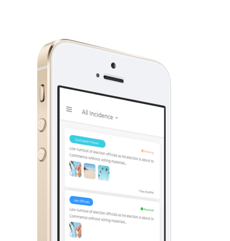
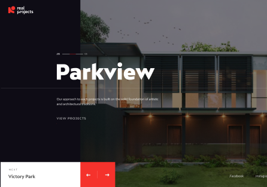

Election reporting
With this tool, the election process can be checkmated with quick response sent to the troubled area
Punterclash
Creating the look and feel for a mobile app that pitches punters against each other while using their betslip as a weapon
Learning
Management
Leading product and experience design for an online learning management platform for SMEs to learn.

Document
Management
Building a digital document management, archival and workflow system for s state parastatalh

Real Projects
Redesigning an architecture firm website to portray their new modernist appoach
